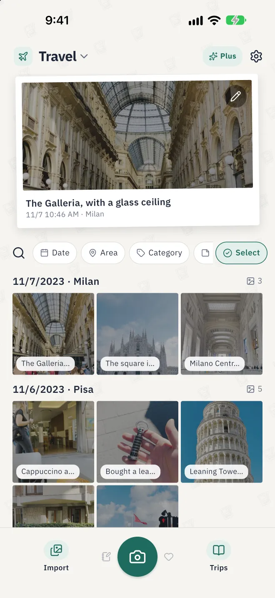
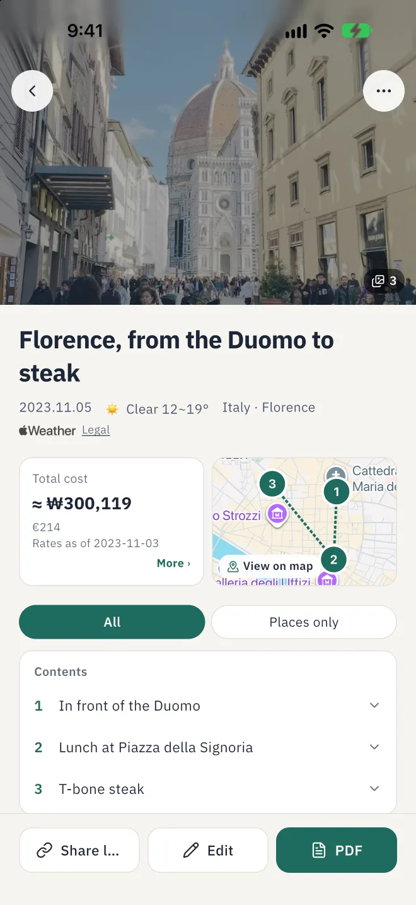
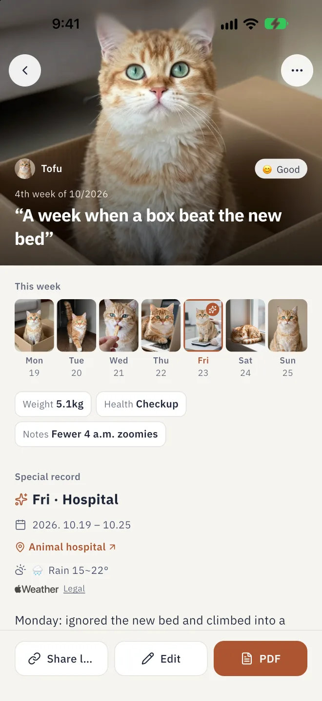
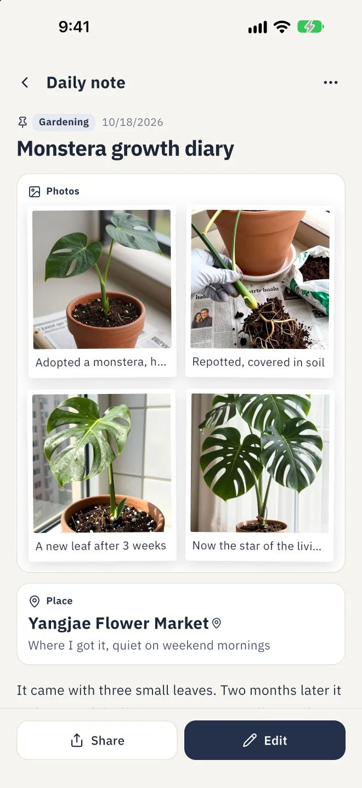
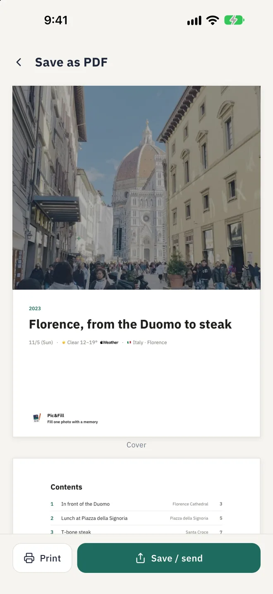

01 · Quick notesOne line is enough.
One line is enough.
You'll know what it means.
Write a note right after you take a photo, or skip it for now. You set the pace.
02 · Photos into recordsWhy you took the photo
Why you took the photo
isn't in the photo.
Gather photos into your own trip. Trips can grow into a journey.
03 · Your HalfThe days worth seeing again
The days worth seeing again
aren't only the big ones.
Moments with your kid or pet, and how you felt, on one page a week. Writing every day is hard for us too.
04 · Everyday lifeWhen you need a note,
When you need a note,
it's right here.
Nothing fancy. Write when a photo needs a note. All the useful tools are still there.
05 · Keep itAn offline book.
An offline book.
Some things belong on paper.
Save the records you made with care as an A4 PDF. Or share them by link.




